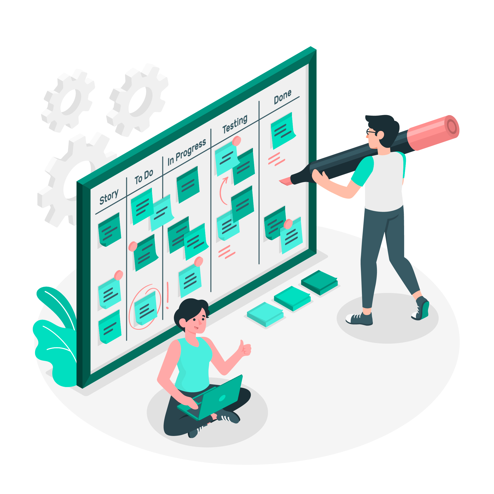

{% extends 'base.html' %}
{% import 'macros.html' as macros %}
{% import 'bootstrap/wtf.html' as wtf %}

{% block title %}
    {{ super() }}
    Bienvenido
{% endblock %}

{% block content %}
    {% if username %}
    <div class="container header_name text-center">
        <section class="container section_name">
        
        <h4>Hola, {{ username }} empecemos! </h4>
        </section>
    </div>
    {% endif %}

    <div class="container newtask">
        <h2>Crea una nueva tarea</h2>

        {{ wtf.quick_form(todo_form) }}
    </div>

    <div class="container listask">
        <h2>Mi lista de tareas</h2>
    <ul class="list-group">
        <div class="row">
            <div class="col-lg-3 text-center col-md-3 col-sm-3 col-xs-3">
                <h6>Tarea</h6>
            </div>
            <div class="col-lg-3 text-center col-md-3 col-sm-3  col-xs-3">
                <h6>¿ Realizada  ?</h6>
            </div>
            <div class="col-lg-3 text-center col-md-3 col-sm-3  col-xs-3">
                <h6>¿ Deseas cambiar el estado de la tarea ?</h6>
            </div>
            <div class="col-lg-3 text-center col-md-3 col-sm-3  col-xs-3">
                <h6>¿ Deseas borrar la tarea  ?</h6>
            </div>
           
        </div>
        {% for todo in todos %}
            {{ macros.render_todo(todo, delete_form, update_form) }}
        {% endfor %}
    </ul>
</div>
{% endblock %}